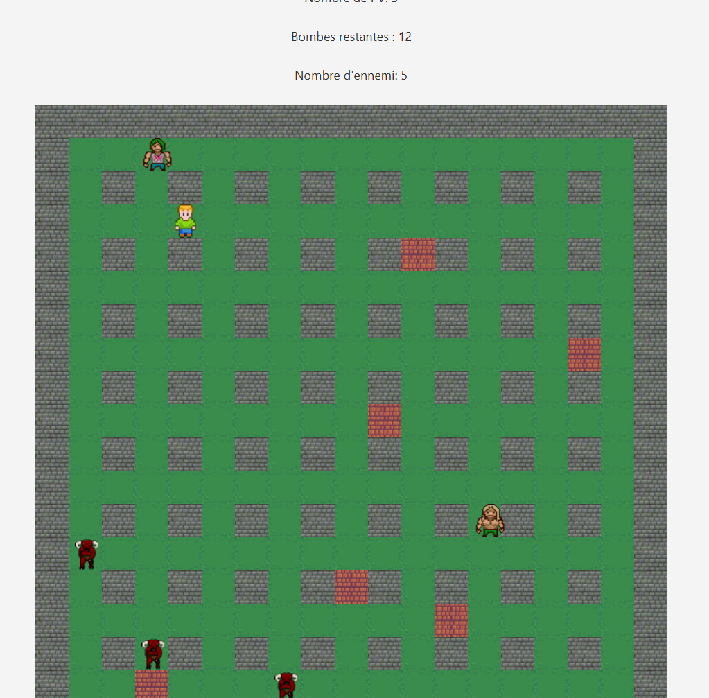

🧨 Bomberman - Jeu en Java

🎯 Objectif du projet
L'objectif de ce projet était de développer un jeu de type Bomberman en Java, en reproduisant les mécaniques principales du jeu original telles que les déplacements sur une grille, la pose de bombes, les explosions et la destruction d'obstacles.
👤 Mon rôle dans le projet
Ce projet a été réalisé en autonomie. J'ai pris en charge presque tout le développement du jeu car quelques classes étaient déja fournies.
🧠 Compétences développées
- Conception d'un jeu basé sur une grille
- Gestion des déplacements et des interactions
- Structuration du code en programmation orientée objet
- Développement d'un projet en autonomie
🛠️ Compétences utilisées
Ce projet m'a permis de renforcer mes compétences en Java, notamment dans la conception d'une architecture orientée objet, la gestion des événements et la mise en place d'une logique de jeu cohérente.